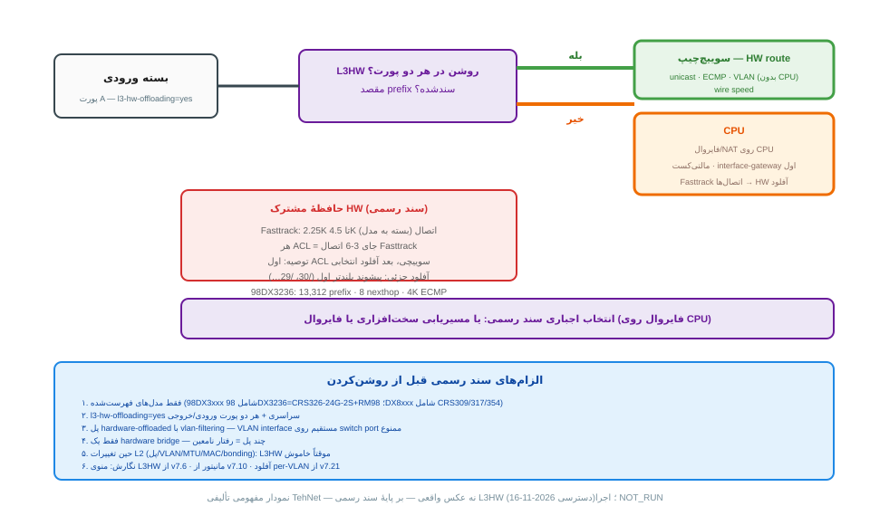

وضعیت درس: DRAFT / NOT_DEPLOYED — در انتظار مرور.
آموزش تصویری از سری MikroTik؛ مخاطب: کارشناس شبکهٔ ارشد.
سناریوی کاملاً فرضی و آموزشی با دادهٔ ساختگی؛ هیچ شبکهٔ واقعی دستکاری نشده و هیچ اجرای واقعی NOT_RUN است.
نمودار مفهومی و تألیفی است (نه عکس واقعی).
inter-VLAN یعنی مسیریابی بین VLANها روی روتر (الگوی M2 — همهٔ ترافیک بین-VLAN از CPU روتر میگذرد). L3HW روی بعضی سوئیچهای CRS3xx همان مسیریابی را به سوییچچیپ میسپارد تا سرعت سیم (wire speed) ممکن شود — اما سه الزام سندشده دارد: فقط روی مدلهای فهرستشده، روی پلِ vlan-filtering با L2HW فعال، و انتخاب بین فایروال یا مسیریابی سختافزاری (فایروال روی CPU اجرا میشود). بدون خواندن این مرزها، L3HW روشنکردن یک کلید خطرناک است نه بهینهسازی.
| بند | مقدار فرضی |
|---|---|
| سوئیچ | CRS326-24G-2S+RM — چیپ 98DX3236 (در فهرست پشتیبانیشدهٔ L3HW سند رسمی) |
| VLANها | 10 دفتر (192.168.10.0/24) · 20 دوربین (192.168.20.0/24) — همان الگوی M2 |
| مسیریابی بین-VLAN | روی خود سوئیچ با L3HW (بهجای روتر جدا) — سناریوی این درس |
| نگارش مبنا | RouterOS v7.16+ (منوی L3HW از v7.6؛ مانیتور از v7.10 — سند رسمی) |
| اجرای واقعی | NOT_RUN — همهٔ دستورها روال سندشدهاند |
| ترافیک/مسیر | سند رسمی |
|---|---|
| IPv4/IPv6 unicast، ECMP، blackhole، پلها، VLAN، bonding (802.3ad/balance-xor) | HW |
| مالتیکست IPv4/IPv6 | CPU |
| مسیرهای interface-gateway | اول CPU (حل ARP) سپس HW |
| Firewall/NAT | روی CPU؛ اتصالهای Fasttrack به HW آفلود میشوند (شامل NAT) |
| همراه با L3HW ناممکن | MLAG، VRF، VRRP، CB/PE، Traffic-Flow |
| # | الزام/هشدار |
|---|---|
| ۱ | فقط مدلهای فهرستشده: سری 98DX3xxx (شامل 98DX3236 → CRS326-24G-2S+) و 98DX8xxx/98DX4xxx/98DX325x (CRS309/312/317/354/…) — مدل بیرون فهرست = بدون L3HW |
| ۲ | روشن بودن همزمان سراسری و per-port: ترافیک فقط وقتی HW-route میشود که هر دو پورت ورودی و خروجی فعال باشند |
| ۳ | L3HW روی L2HW سوار است → پل باید hardware-offloaded و vlan-filtering داشته باشد؛ و «VLAN interface مستقیم روی switch port ندهید» |
| ۴ | فقط یک hardware bridge؛ چند پل «ممکن است رفتار نامعین ایجاد کند» |
| ۵ | حین تغییرات لایهٔ 2 (پل/VLAN/MTU/MAC/bonding) توصیهٔ رسمی: L3HW را موقتاً خاموش کنید |
| ۶ | انتخاب اجباری: یا مسیریابی سختافزاری یا فایروال — ruleهای فایروال روی CPU اجرا میشوند؛ Fasttrack اتصالها (با NAT) را به HW میسپارد |
# ۱) L2HW پایه: پل vlan-filtering (الگوی M2/N4) — و نه VLAN interface روی switch port
/interface bridge set bridge vlan-filtering=yes hw=yes
# ۲) روشنکردن L3HW سراسری و per-port
/interface ethernet switch set 0 l3-hw-offloading=yes
/interface ethernet switch port set 0-23 l3-hw-offloading=yes
# ۳) مانیتور پس از اعمال (v7.10+)
/interface ethernet switch l3-hw-offloading print statsدر حین تغییرات لایهٔ 2: `set 0 l3-hw-offloading=no` → تغییر → بازگشت (الزام ۵).
| وضعیت | انتخاب سندشدهوار |
|---|---|
| بین-VLAN سنگین بین دو VLAN با پل سالم و مدل فهرستشده | L3HW + ACL سوییچی برای بستنها |
| نیازمند ruleهای فایروال پیچیده بین VLANها | فایروال روی CPU (یا نصفکردن: بخش HW با ACL، بخش policy روی CPU) |
| MLAG/VRF/VRRP لازم است | L3HW جواب نیست (سند رسمی: همراه اینها ناممکن) |
| مدل بیرون فهرست | مسیر روتر جدا (الگوی M2) |

شرح متنی نمودار (جایگزین تصویر برای دسترسپذیری): بسته از پورت A وارد سوئیچ میشود؛ اگر L3HW روشن و هر دو پورت عضو باشند و مقصد یک پیشوند سندشده باشد، سوییچچیپ مسیر را در HW انجام میدهد (مسیر سبز — بدون CPU). در غیر این صورت به CPU میرود: فایروال/NAT/مسیرهای باقی (مسیر نارنجی). حاشیهٔ نمودار: جعبهٔ «یا HW-روت یا فایروال» و جعبهٔ حافظهٔ مشترک Fasttrack/ACL. برچسب «تألیفی/مفهومی».
| نشانه | علت محتمل | بررسی | راهحل |
|---|---|---|---|
| L3HW روشن ولی بین-VLAN از CPU میرود | یکی از دو پورت per-port خاموش؛ یا پل بدون vlan-filtering/hw | مانیتور v7.10 | الزامهای ۲ و ۳ |
| VLAN interface روی switch port ساختهاید | نقض الزام ۳ | `/interface vlan print` | VLAN interface روی پل (الگوی M2) |
| فایروال بین VLANها اثر نمیکند | فایروال روی CPU است؛ ترافیک HW از آن رد نمیشود | انتخاب طراحی | ACL سوییچی یا کنارگذاشتن HW برای آن ترافیک |
| Fasttrackها افت کردند بعد از افزودن ACL | حافظهٔ مشترک HW | شمارش ruleها | کاهش ACL / اولویتدهی (توصیهٔ رسمی) |
| MAC telnet قطع شد (98DX8xxx…) | رفتار سندشده با L3HW | سند رسمی | rule ACL برای UDP 20561 به CPU |
| بعضی prefixها روی CPU ماندهاند | آفلود جزئی با پرشدن حافظه | مانیتور | suppress-hw-offload/routing filter |
| پیوند | مقصد |
|---|---|
| درسهای مرتبط | M2 VLAN · S1 سوئیچها · S3 ماژولها |
| نقشهٔ کامل سری | topic map |
| طراحی L3 و L3HW برای سازمان شما | خدمات میکروتیک تهران |
| درس بعدی سری | M5 — انتخاب VPN برای شعبه (تولید در نوبت بعدی؛ فعلاً فقط در topic map) |